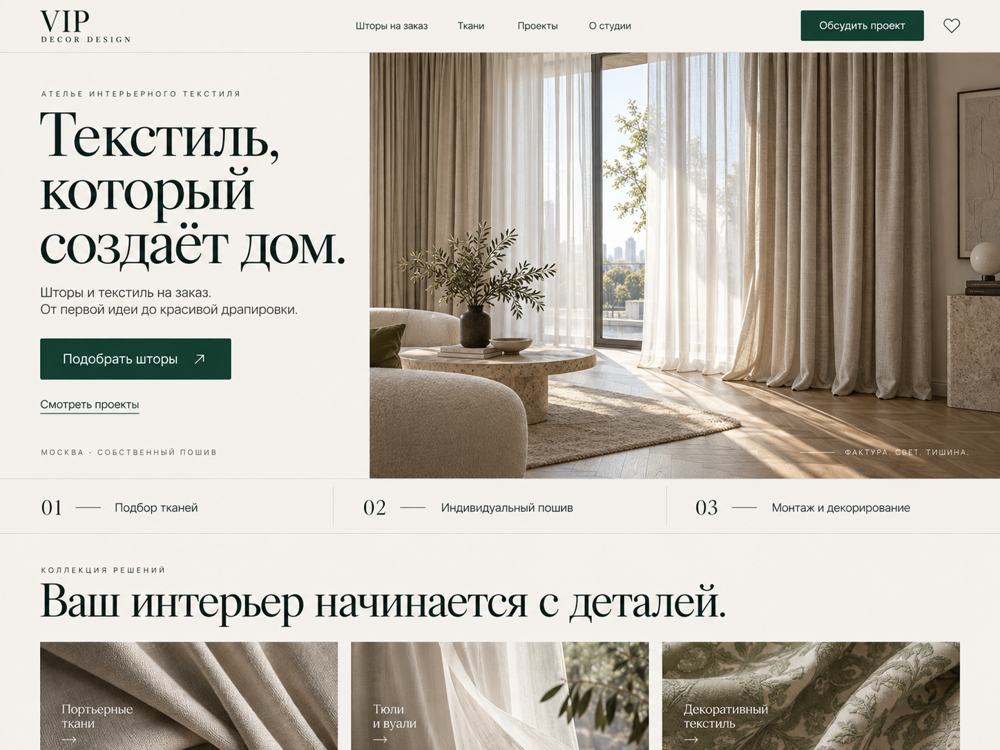
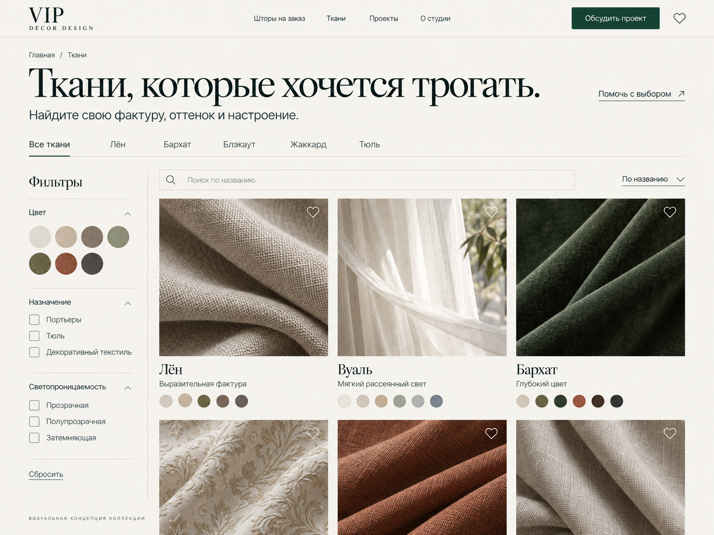
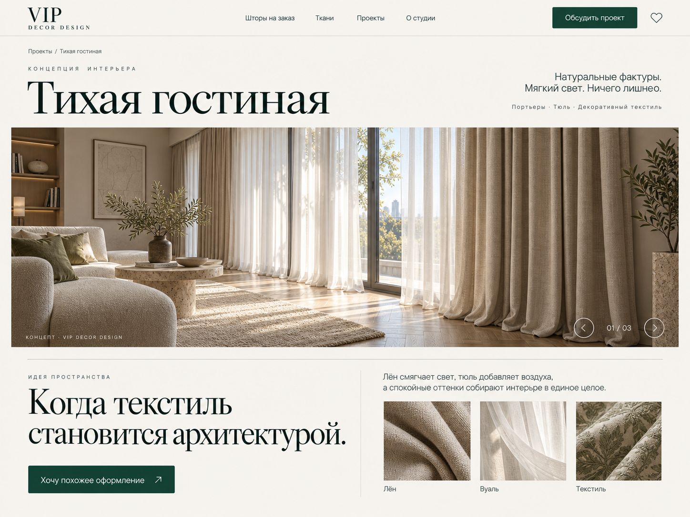
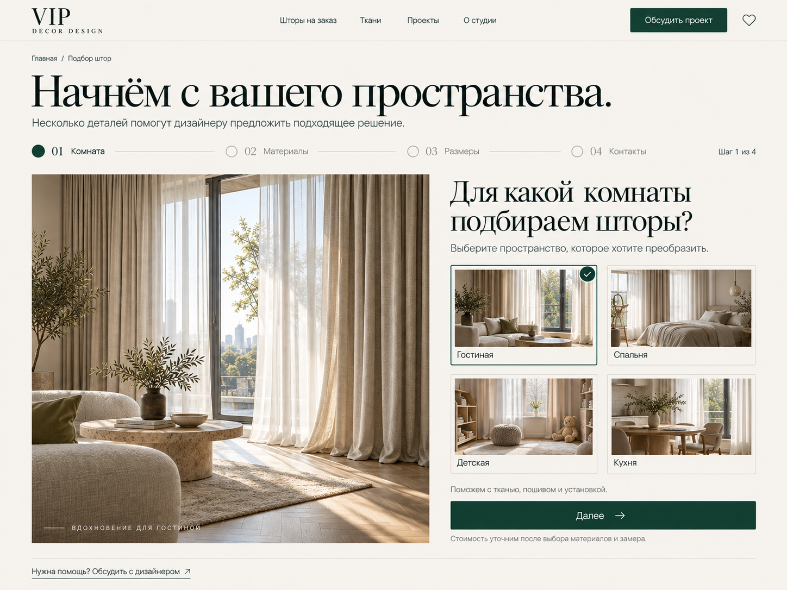
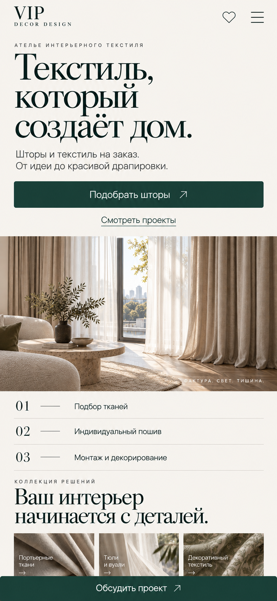

Редизайн vip2d.ru
Фактура.
Свет. Тишина.
Современное ателье интерьерного текстиля. Крупные фотографии, выразительная типографика и естественные оттенки раскрывают красоту ткани — от первого впечатления до подбора штор.

Главная страница
Первое впечатление, предложение ателье, вход в подбор штор и последовательность работы.

Каталог тканей
Фактуры, цвет и назначение помогают выбрать материал. Карточки ведут к подробностям и подборке.

Страница проекта
Крупная фотография, замысел оформления и палитра материалов. «Тихая гостиная» — концепция интерьера.

Подбор штор
Первый шаг из четырёх: комната, материалы, размеры, контакты. Спокойный путь к консультации.

Мобильная главная
Крупный текст, удобная кнопка, вертикальная композиция и быстрый доступ к консультации.
От телефона до большого экрана
Тот же характер.
Другой ритм.
На телефоне композиция становится вертикальной. Изображение сохраняет выразительность, элементы управления остаются удобными для нажатия.
В задании описаны ширины 320–1920 px, мобильные фильтры, состояния форм, клавиатурная навигация и сохранение выбранных материалов.
Нажмите на любой макет, чтобы открыть оригинал. Размер растра служит для просмотра; размеры интерфейса в CSS заданы в текстовом брифе.
Передать в разработку
В новом сайте сохраняется всё содержимое и все возможности действующего vip2d.ru. Пять макетов задают общий стиль. При реализации необходимо перенести все страницы, товары, фотографии, услуги, калькулятор, формы, магазин, контакты и документы, затем сверить полноту по реестру переноса.
- Прикрепите пять PNG из папки
imagesк новому чату. - Скопируйте содержимое PROMPT_FOR_BUILD.md в сообщение.
- Приложите DESIGN_BRIEF.md как подробную спецификацию.
Приоритет при воссоздании: композиция и настроение — по макетам; точные тексты, отступы, адаптация и работа элементов — по брифу. Интерфейс необходимо сверстать живыми компонентами.